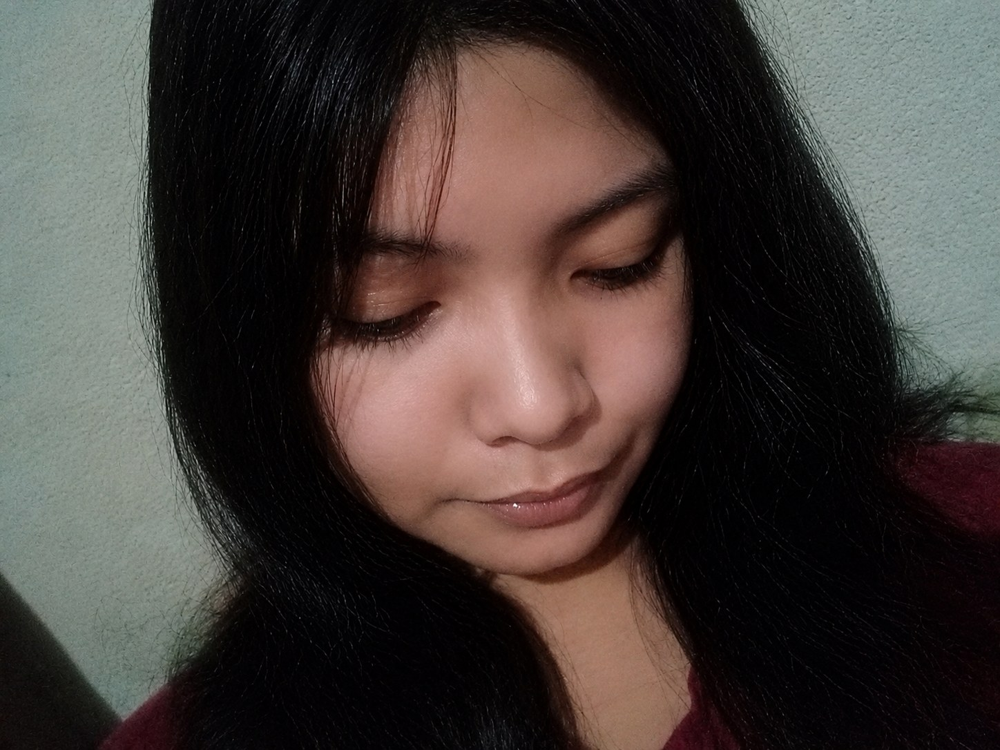

Your smile
It somehow makes everything around me feel a little lighter.
a little place on the internet made only for you
I know words cannot fix everything, but I hope this shows you how much you mean to me.


I made this for you because I wanted to create something you could come back to — something that would remind you that behind all of my mistakes, misunderstandings, and imperfect moments, there is still one thing I am completely sure about.
I love you. Truly.
Tap a circle. Take your time. Every version of you is beautiful to me.
Some moments look ordinary to everyone else. They feel like everything to me because you are there.
Not a complete list. I would need a lifetime for that.
It somehow makes everything around me feel a little lighter.
The way you care about the people you love is one of the things I admire most.
Even doing nothing feels special when I am with you.
The small habits, expressions, and random moments that make you uniquely you.
I know I do not always show it perfectly, but I never take your love for granted.
Not because you are perfect, but because you are you — and you are still the person I want beside me.
For the things I should have said sooner, and the promises I want to show through my actions.
My love,
I don't really know where to start because there are so many things I want to tell you, and sometimes I feel like normal messages aren't enough to explain everything that's inside my heart.
First, I'm sorry.
I'm sorry for the times I hurt you, especially for the moments when I knew I did something wrong but didn't apologize right away. I know that saying sorry late can sometimes make things hurt even more, because while I was taking my time figuring out what to say, you were already there carrying the pain caused by something I did.
I know I don't always handle things perfectly. Sometimes I become quiet. Sometimes I struggle to explain myself. Sometimes my actions don't immediately match what I really feel. And I know that can make you wonder if I truly understand you or if I care enough.
But please know that I do.
I care about you more than I probably manage to show sometimes.
I know you've asked me for consistency, and I've been thinking about that a lot. I understand that love shouldn't only be obvious during the good days. It should also be present when we're tired, upset, annoyed, confused, or having a difficult time understanding each other.
I don't want to love you only when everything is easy.
I want to learn how to love you better when things are difficult too.
I know we're both human. We both have days when we're not okay. We both have emotions that sometimes become difficult to explain. And I don't expect our relationship to be perfect all the time.
What I want is for us to continue choosing to understand each other.
I want us to talk instead of letting silence create bigger problems between us.
I want to listen better.
I want to become more aware of the things that hurt you.
I want my actions to make you feel secure instead of making you question how much you mean to me.
And most importantly, I don't want you to ever feel like you're asking for too much just because you want effort, reassurance, affection, communication, or consistency from me.
You deserve to feel loved.
Not occasionally.
Not only when everything is okay.
You deserve to feel it consistently.
I can't promise that I'll suddenly become perfect after writing this because that wouldn't be honest.
I'll still make mistakes. There may still be moments when I don't know exactly what to say or do.
But what I can promise is that I want to keep learning.
I want to keep trying.
I want to communicate better.
I want to apologize when I'm wrong instead of letting pride or confusion delay it.
I want to understand your feelings instead of immediately defending mine.
And I want to show you through my actions that loving you isn't something I only say.
You're such an important part of my life.
There are moments with you that might seem ordinary to everyone else, but somehow they become special to me because you're there.
Your smile. Your voice. Your random stories. Your moods. Your little habits. The way you laugh. Even the little things that annoy me sometimes.
They're all parts of you that I've grown to love.
And when I think about losing those things, that's when I realize even more how important you are to me.
I don't want our mistakes to become bigger than our love.
I don't want one difficult moment to erase all the beautiful ones we've shared.
I want us to grow through them.
I want us to look back one day and realize that instead of allowing our problems to pull us apart, we learned how to understand each other better because of them.
Thank you for loving me even during the moments when I'm difficult to understand. Thank you for the patience you've given me. Thank you for the memories we've created. Thank you for being someone who makes me want to become better.
And I'm sorry for every moment when my actions made you feel otherwise.
I don't know exactly what the future will look like.
But there is something I do know:
I still want you in it.
I still want your stories. I still want your laughter. I still want our random moments. I still want the simple days. I still want the exciting days.
And even when there are difficult days, I want us to learn how to face them together instead of letting them become reasons to lose each other.
So this little website isn't supposed to magically fix everything. It's just something I made because I wanted you to see a piece of what's inside my heart.
A reminder that even when I don't always express things perfectly, my feelings for you are real.
And if you're willing, I want to keep building something better with you.
Not perfect. Just honest. Safe. Consistent. Understanding. And full of love.
I'm sorry for the times I hurt you. Thank you for the times you've stayed. And thank you for simply being you.
Out of all the people, all the places, all the possibilities... I'm still grateful that somehow, I found you.
And if I had to choose again, I'd still choose you. Always.
I still choose you.
Somehow, even a small picture can hold an entire feeling.
It still feels like one of the easiest ways back to a good day.
Not because it was perfect. Because it was ours.
one more thing
I still couldn't fit everything I feel about you here.
I love you.
And I hope I get to keep showing you that.
Thank you for being part of my life. I'll keep choosing you, not just through words, but through the way I treat you.